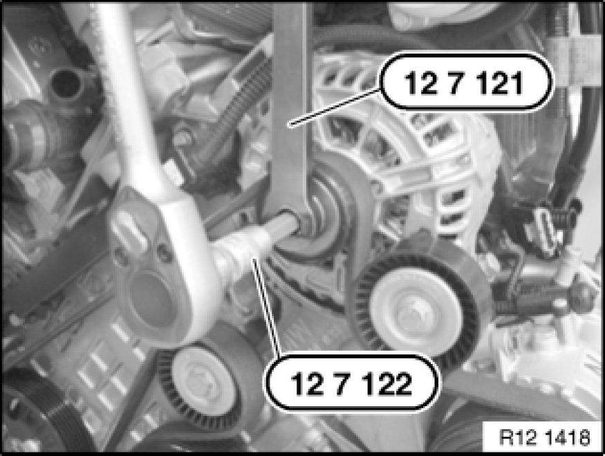

Replacing Alternator Belt Pulley
12 31 ... - Replacing alternator belt pulley

Special tools required:
- 12 7 121 12 7 121 Counterholder Wrench
- 12 7 122 12 7 122 Socket

Illustrations show N42:
If fitted, remove cover cap from belt pulley.
Depending on alternator type, slacken screw with:
- Torx socket wrench
- Slacken multi-tooth socket wrench (special tool 12 7 122 12 7 122 Socket).
Grip freewheel with special tool 12 7 121 12 7 121 Counterholder Wrench.
Installation:
Tightening torque 12 31 8AZ [1][2]Specifications.
Remove alternator drive belt.
Release screw and if necessary remove freewheel.